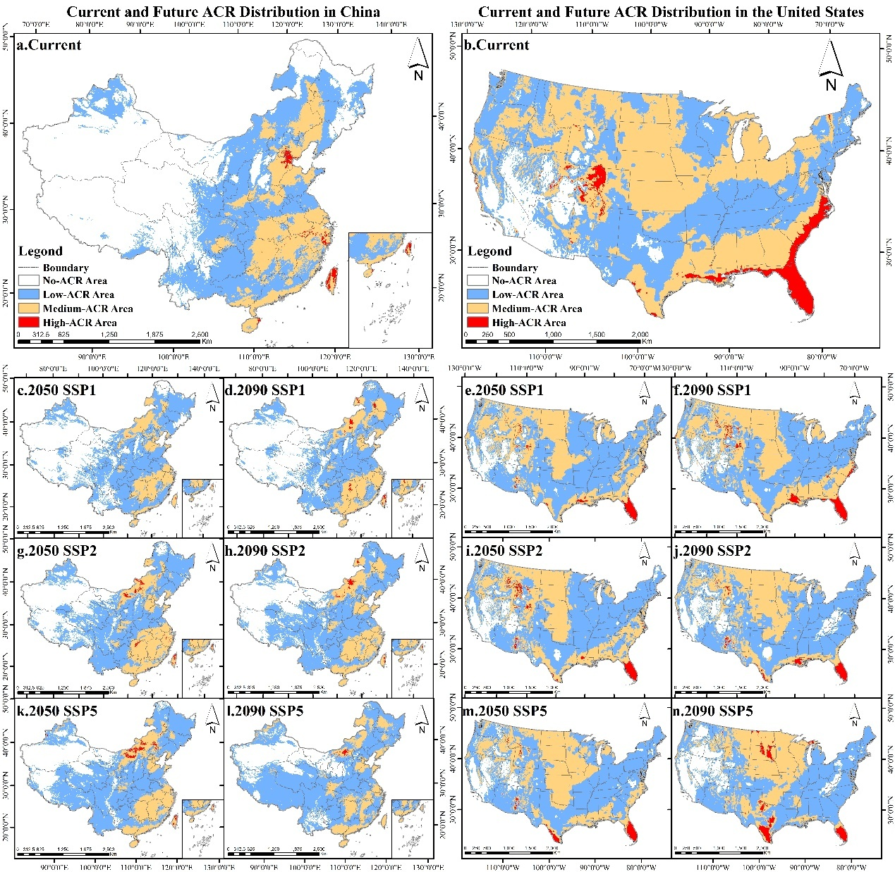
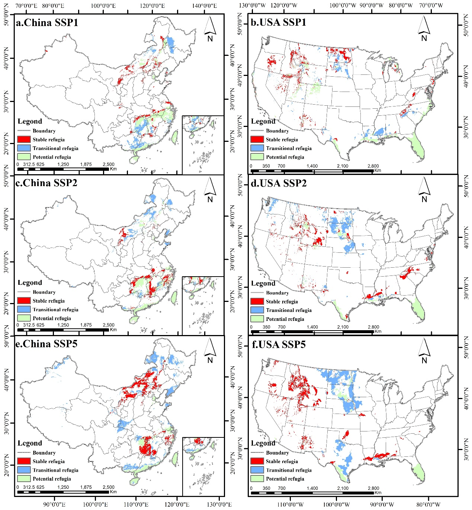

Climate resilience of flagship bird communities
A comparative study of bird community resilience and future climate refugia under climate change in China and the United States.
Research overview
This project investigates how climate change may reshape the resilience of flagship bird communities across China and the United States. Rather than relying only on species richness, the study evaluates community resilience by combining species distribution models with functional redundancy and response diversity. The analysis then extends into future climate scenarios to examine how resilience may change and where potential climate refugia may occur.
Bird Community Resilience
A spatial assessment of current and projected future resilience across China and the United States.
Future Climate Refugia
Identification of areas that may retain or support bird community resilience under future climate conditions.
Research question
Why this question?
Climate change is reshaping species distributions and ecological communities. However, species richness alone does not fully describe whether a community can remain resilient when environmental conditions change. Communities containing species with overlapping ecological functions may have greater buffering capacity against species loss. At the same time, species that respond differently to environmental change may help maintain ecosystem functioning under changing conditions. This project therefore combines functional redundancy and response diversity to evaluate bird community resilience spatially.
Data
Methodology
Species distribution models were developed using GBIF occurrence records and environmental predictors. MaxEnt was used to estimate species-level habitat suitability under current and future climate conditions. The resulting species distributions were then integrated to quantify community resilience through functional redundancy and response diversity. Finally, XGBoost and SHAP were used to investigate and interpret the relationships between environmental variables and community resilience.
01 · Bird community resilience
The first major output of the study is a single comprehensive bird community resilience map covering both China and the United States. The map integrates the modeled distributions of multiple flagship bird species and summarizes community-level resilience using functional redundancy and response diversity.
Current and future resilience patterns across China and the United States.

Key findings
The analysis revealed substantial differences in the spatial distribution of bird community resilience between China and the United States.
High-resilience area in China
Resilient area coverage in the United States
Non-ACR area in China
Lower spatial resilience
China was dominated by non-resilient and low-resilience areas, while high-resilience areas represented only a small proportion of the study region.
Broader resilience coverage
The United States showed substantially greater spatial coverage of resilient bird communities.
02 · Future climate refugia
The second major output builds directly on the bird community resilience analysis. By comparing current and future resilience under projected climate scenarios, the study identifies areas where resilient bird communities may persist or where resilience may change in ways relevant to future conservation planning.
From resilience to refugia
Future climate refugia were identified from the relationship between current and future bird community resilience. This extends the analysis from asking where resilience exists today to asking where biodiversity may remain buffered against future climate change.
Stable resilience
Areas where relatively high resilience is maintained under future climate conditions.
Potential climate refugia
Areas that may continue to provide relatively favorable conditions for resilient communities.
Areas of concern
Areas where resilience may decline under future climate change and therefore may require greater conservation attention.
Future climate refugia identified by comparing current and projected future bird community resilience under climate change scenarios.

Conservation implications
The results suggest that climate-adaptive conservation should consider not only current biodiversity patterns, but also the capacity of ecological communities to respond to environmental change.
From resilience to conservation
In China, conservation planning may benefit from prioritizing areas approaching critical climatic thresholds and preventing further habitat degradation. In the United States, maintaining elevational and landscape connectivity may be particularly important for preserving the buffering capacity of mountainous and resilient regions. These differences suggest that conservation strategies should be adapted to regional environmental and ecological contexts.
Developing a research question into a complete study
I conducted this research as part of the Pioneer Research Program. Through the program, I developed an ecological research question into a quantitative study combining species distribution modeling, spatial analysis, community resilience metrics, and machine learning. The project allowed me to explore how geospatial and ecological methods can be used to address real-world questions in biodiversity conservation under climate change.
Full research paper
The complete research paper documents the background, research question, methodology, spatial analysis, results, discussion, and conservation implications of this project.
Climate Resilience of Flagship Bird Communities in China and the United States
Read the complete paper for the full research framework, analytical methods, results, discussion, and references.
What happens when the environment changes — and where might biodiversity persist?